ITD Tape Utility
Line Mode Operations Manual
The line mode version of the Utility
is invoked by the following command.
Once invoked, the user is greeted with:
ITD Tape Utility version
x.x
Please Enter Request
At this point the user can enter commands
that retrieve data from or write data to an unlabeled, ANSI labeled, or
IBM labeled tape. Data can also be retrieved from MTS FS tapes. Tapes
may be either physical tapes or virtual tapes that reside in a UNIX file.
The program must being run on an
appropriate system with attached tapes drives to use physical tapes.
The following commands are used
by the utility, they are divided into function areas. Some commands are
listed in multiple areas.
Commands that open a tape.
Commands that close tape(s).
Commands to get information
about a tape or data.
Commands to transfer data between tapes
and Unix files.
Commands to position a tape.
Commands that control how tape data
is processed.
Commands that effect tape labels or
tape label processing.
Commands used by the utility.
An explanation of the commands follows:
The close command frees the current
input or output (virtual) tape. This will allow the opening of a new input
or output tape. When using physical tapes, the user should remove the tape
from the drive after this command has completed.
copy {options}
copy file=n
{options}
copy files=m-n
{options}
The first form copies the current file
on the input tape to a UNIX file. The second form copies the nth
file on the input tape to a UNIX file and the third form copies the mth
through nth files on the input tape to a series of UNIX files.
If the input tape is unlabeled, tapes files are copied to UNIX files
using names like "tape.file.n", where n is
the original position of the file on the input tape. For labeled tapes,
the name the specified in the label is used to create a file name. For
FS tapes, the name in the FS header is used to create a file name. The
name from the label or FS header is translated to lower case, all
of the following characters *@&%$#<>/\ found in the name are
translated to underscores as is an initial period or a hyphen (minus sign).
This transformed name is used as the name for the UNIX file which is placed
in the current directory.
Example: Copy the current file on
the input tape.
Please
Enter Request
c
Warning
file vtest.f00001 already exists.
Enter
replacement name, hit return to overwrite, or generate
an end of file to cancel
new.file
Copying
tape file 1 VTEST.F00001 to new.file.
576 blocks 1106 records 46080 bytes
1106 records 47186 bytes
Note the input tape was a IBM label
tape and the current file on the tape was named VTEST.F00001. The
utility tried to copy this file to a UNIX named vtest.f00001 but
found an existing file with that name. The utility then prompted for clarification.
The user decided to copy the file to a new file named new.file.
copy output=filename
{options}
copy file=n
output=filename
{options}
copy files=m-n
output=filename
{options}
The first form copies the current file
on the input tape to the named file. The second and third forms copy the
nth
or the mth through the nth files of the input
tape to the named file. When a less than fully qualified filename
is used, the file will be created in the current directory or based on
the current directory.
Example: Copy the first file of
the input tape to the directory Public belonging to the user anybody
as a file named myprog.c.
Please
Enter Request
c
f=1 output=~anybody/Public/myprog.c
Copying
tape file 1 VTEST.F00001 to /afs/umich.edu/user/a/n/anybody/Public/myprog.c.
576 blocks 1106 records 46080 bytes
1106 records 47186 bytes
Example: Copy the first file of
the input tape to the directory Public as a named myprog.c.
Please
Enter Request
c
f=1 output=Public/myprog.c
Copying
tape file 1 VTEST.F00001 to Public/myprog.c.
576 blocks 1106 records 46080 bytes
1106 records 47186 bytes
Note that the directory Public
will be created in the current directory if it didn't already exist there.
copy output=filepattern~
{options}
copy file=n
output=filepattern~ {options}
copy files=m-n
output=filepattern~ {options}
The first form copies the current file
on the input tape to a UNIX file. The second and third forms copy the nth
or the mth through the nth files of the input
tape to UNIX file(s). The UNIX files used will have names of "filepattern_m"
through "filepattern_n"
where the ending numbers (m-n) correspond to the file's
original position on the input tape.
Example: Copy the second through
fifth file of the input tape into the directory test using tape.vtest.file
as the pattern for naming the new files.
Please
Enter Request
c
f=2-5 output=test/tape.vtest.file~
Copying
tape file 2 VTEST.F00002 to test/tape.vtest.file_2.
688 blocks 1360 records 55699 bytes
1360 records 57059 bytes
Logical
End of Tape reached
Note there were only 2 files on
the input tape and the copying stopped when it reached the end of tape.
copy output=directory
{options}
copy file=n
output=directory {options}
copy files=m-n
output=directory {options}
The first form copies the current file
on the input tape to the named directory. The second and third forms copy
the nth
or the mth through the nth files of the input
tape to the named directory. If the input tape is unlabeled, tapes files
are copied to UNIX files using names like "tape.file.n" where
n is the original position of the file on the input tape.
For labeled tapes, the name the specified in the label is used to create
the UNIX file name. For FS tapes, the name in the FS header is used to
create the UNIX file name. The name from the label or FS header is translated
to lower case, all of the following characters *@&%$#<>/\
found in the name are translated to underscores as is an initial period
or a hyphen (minus sign). This transformed name is used as the name for
the UNIX file that is created in the specified directory. If the directory
name is not fully qualified, it will be based on the current directory.
Example: Copy the first two files
of the input tape to a directory named test.
Please
Enter Request
c
f=1-2 output=test
Copying
tape file 1 VTEST.F00001 to test/vtest.f00001.
576 blocks 1106 records 46080 bytes
1106 records 47186 bytes
Copying
tape file 2 VTEST.F00002 to test/vtest.f00002.
688 blocks 1360 records 55699 bytes
1360 records 57059 bytes
copy output|screen|terminal
{options}
copy file=n
output|screen|terminal {options}
copy files=m-n
output|screen|terminal {options}
The first form copies the current file
on the input tape to the output tape or your workstation's screen. The
second and third forms copy the nth or the mth
though nth files of the input tape to the output tape or
the screen of your workstation. The output tape must be
positioned
to where the copy is to commence. To give a file a specific name to a file
on the output tape, a filename
command must have
been previously given for the output tape. When copying to labeled tapes
and no filename command was issued, the output files
are named "Vvolname.Ffilenumber"
where volname is the volume name of the output tape and filenumber
is the file's position on the the output tape. Copying to an FS tape is
not supported. The format command
can be used to specify the format of
the output tape. If no format is specified, the format in the label for
the file where the output tape was positioned at before the copy command
was issued is used. A display
command can be used to show
the current format.
Example: Copy the first file of
the input tape to a new virtual ANSI labeled tape in the UNIX file tape26.
Give output tape a volume name of MYTAPE. Next copy the second
file of the input tape to the output tape and give the new tape file a
name of ANOVA.SPSS.
Please
Enter Request
initialize
tape26 ansivolume=mytape
Please
Enter Request
c
f=1 output
Copying
tape file 1 VTEST.F00001 to tape26 file 1 VTAPE26.F00001.
576 blocks 1106 records 46080 bytes 26 blocks 1106 records
46080 bytes
Please
Enter Request
filename
anova.spss
Set
file name on input or output tape?
output
Please
Enter Request
c
f=2 output
Copying
tape file 2 VTEST.F00002 to tape26 file 2 ANOVA.SPSS.
688 blocks 1360 records 55699 bytes 31 blocks 1360 records
55699 bytes
Note that in coping, the files where
reblocked. The input tape was an IBM labeled virtual tape with files in
VB(128,124) format and the output tape was an ANSI label virtual tape written
in DBS(2048,32772) format.
copy input|rinput|sinput=filename
output|screen
The named file is copied to the output
tape or the screen of your work station. The copying will start at the
current position
of the output tape. To give a file on the output tape a specific name,
a filename
command must have
been previously given. When copying to labeled tapes and no filename command
was issued, the output files are named "Vvolname.Ffilenumber"
where volname is the volume name of the output tape and filenumber
is the file's position on the the output tape. Copying to a FS tape is
not supported. The format command
can be used to specify the format of
the output tape. If no format is specified, the format in the label for
the file where the output tape was positioned at before the copy command
was issued is used. A display
command can be used to show
the current format. Input and rinput
are synonymous, they tell the program to treat the
input file as a set of records where the newline character signals a end
of record. The newline characters are stripped from the data before the
record is written to the output file. Sinput signals
that the input file will be read as a continuous string of characters.
All characters will be passed to the output file - including new line characters.
When copying to the screen, unprintable characters are printed in hex format
(\xHH).
Example: Copy the the first three
records of the UNIX file vtest.f00001 to your screen.
Please
Enter Request
c
input=vtest.f00001 screen r=3
Copying
file vtest.f00001 to Std out.
#include
<stdlib.h>
#include
<stdio.h>
#include
<string.h>
3 records 56 bytes
3 records 59 bytes
Example: Copy the UNIX file new.file
to last file of the previously opened unlabeled output tape. Give it a
fixed block format with a record length of 80 and write a 100 records per
block.
Please
Enter Request
pos
eot
Warning
Logical End of Tape reached while positioning.
Please
Enter Request
format
fb(8000,80)
Please
Enter Request
c
i=new.file output
Copying
file new.file to tape4 file 2 .
Warning
record longer that record length - truncation will occur
Warning
record longer that record length - truncation will occur
Warning
record longer that record length - truncation will occur
Warning
record longer that record length - truncation will occur
Warning
record longer that record length - truncation will occur
Warning
record longer that record length - truncation will occur
Warning
record longer that record length - truncation will occur
Warning
record longer that record length - truncation will occur
Warning
record longer that record length - truncation will occur
1106 records 46080 bytes 12 blocks 1106 records 88480 bytes
Note - The utility found several
records that where longer than 80 bytes and truncated them. Also note that
the position command and format command omitted the output keyword.
Because there was no input tape open, the utility automatically assumed
the commands applied to the output tape. If an input tape was open, the
utility would have prompted for clarification. The output or screen
keyword must be used on the copy command else the utility would copy
the file to a UNIX file named tape.file.0. The utility can be used
to copy from UNIX file to UNIX file by specifying output=filename
instead of just output on the copy command, however the UNIX
cp is the usual way to do this.
copy
input=directory output {options}
Not support yet.
Options
When the input source is in stream
mode, this options has the utility copy only the
first n bytes of the file. Especially useful when coping
to the screen.
When the input source is in record
mode, this options has the utility copy only the
first n records of the file. Especially useful when coping
to the screen.
This options has the utility copy only
the first n blocks of the file. Especially
useful when coping to the screen.
Normally once a copy command is issued,
a message is issued at the start
of the copy and summary message is printed at the end of the copy.
When very large files are being copied
there may be a significant delay between the first and second messages.
If you wish to monitor the copy, use this option to
print out a message after every n tape blocks have been processed.
This option overrides the warn command and turns warnings
on or off for the duration of the copy operation.
Used to override format information
normally retrieved from the label of the input tape. If
multiple input tape files are being copied, all files will use the format
specified on the copy command. See the format
command for description
of valid formats specifications.
Used to override the block prefix information
found in the ANSI label of the input tape. If multiple input tape files
are being copied, all files will use the prefix specified on the copy command.
See the prefix
command for description of block prefix.
line|line(char)|line(char12)|line(int)|line(none)
When copying from an FS tape, the options
shown above may be used to control how MTS line numbers are handled.
If Line or line(char) is specified, each record will be prefixed
with the MTS line number represented as a character string followed by
a tab character. Line(char12)
will prefix each record with the MTS line number as first twelve characters
of each record, the line number is right justified. Line(int) will
prefix each record with the MTS line number as a 32 bit integer. The default,
line(none), copies just the record and the MTS line number is discarded.
translate|notranslate|translate(mts|oldmts|ibm)
This overrides the translate setting for the
input tape when copying from a tape.
This option has some effect on end of line processing when reading from a file.
datecheck
input|output on|off
This command is used to enable or
disable the expiration date checking function. When enabled (on),
which is the default setting, a file on a labeled output tape can not be
overwritten if it's expiration date hasn't occurred. When disabled, a tape
file can be overwritten before it's expiration date has occurred. While
it is possible to use this command on an input tape, it does nothing.
display input|output
display input|output
blocks=n
display input|output
blocks=n length=m
First form can be used to display general
information about the current input or output tape and the state of various
options. The second and third form gives the same information as the first
form and displays data in the current file. The second form displays the
first 32 bytes in each of the next n
blocks of the current (virtual) tape file in HEXADECIMAL, ASCII, and EBCDIC.
The third form does the same as the second, but displays the first m
bytes of each block instead. When printing ASCII and EBCDIC, unprintable
characters are represented by a question mark.
Example: Get information about
the input tape and display the first 64 bytes of the current file on the
input tape. Also get information about the output tape.
Please Enter Request
dis input b=1 l=64
IBM labeled Tape,Input Device=tape6, volume=TEST,
owner=
LP=ON, File=1, Block=0, DSN=VTEST.F00001
, format=VB(128,124)
Translate=on, Trtable=EBCD, Recording_mode=Record,
Warn=on, Date checking=on
Creation date=Sep. 05, 1996
Block 1
00000000 00750000 00170000 7B899583 93A48485
404CA2A3 84938982 4B886E00 1600007B
? u ? ? ? ? ? ? { ? ? ? ? ? ? ? @ L ? ? ?
? ? ? K ? n ? ? ? ? {
? ? ? ? ? ? ? ? # i n c l u d e <
s t d l i b . h > ? ? ? ? #
00000020 89958393 A4848540 4CA2A384 89964B88
6E001700 007B8995 8393A484 85404CA2
? ? ? ? ? ? ? @ L ? ? ? ? ? K ? n ? ? ? ?
{ ? ? ? ? ? ? ? @ L ?
i n c l u d e < s t d i o . h >
? ? ? ? # i n c l u d e < s
Please Enter Request
dis output
ANSI labeled Tape,Output Device=tape26,
volume=TAPE26, owner=
LP=ON, File=1, Block=0, DSN=VTAPE26.F00001
, format=DBS(2048,32772)
Translate=off,, Recording_mode=Record,
Warn=on, Date checking=on, blkpfx=4
Creation date=Oct. 08, 1996
display input|rinput=filename
blocks=n {length=m}
display sinput=filename
length=m
The display command can be used to
display data within a UNIX file in HEXADECIMAL, ASCII, and EBCDIC. The
first form will display the first 32 bytes of the first n lines
of a file where n is specified using the blocks keyword.
If more than 32 bytes are required the length keyword can be used
to specify the number of bytes needed. The second form treats the file
as one long string and will display the first m bytes of
the file where m is specified by the length keyword.
Example: Display up to 64 bytes
in each of the first 4 lines found in the file new.file.
Please
Enter Request
dis
i=new.file b=4 l=64
File
new.file
Record
0
00000000
23696E63 6C756465 203C7374 646C6962 2E683E
# i n c l u d e < s t d l i b .
h >
? ? > ? % ? ? ? ? ? ? ? ? % ? ? ? ? ?
Record
1
00000000
23696E63 6C756465 203C7374 64696F2E 683E
# i n c l u d e < s t d i o . h
>
? ? > ? % ? ? ? ? ? ? ? ? ? ? ? ? ?
Record
2
00000000
23696E63 6C756465 203C7374 72696E67 2E683E
# i n c l u d e < s t r i n g .
h >
? ? > ? % ? ? ? ? ? ? ? ? ? > ? ? ? ?
Record
3
00000000
23696E63 6C756465 203C6374 7970652E 683E
# i n c l u d e < c t y p e . h
>
? ? > ? % ? ? ? ? ? ? ? ` ? ? ? ? ?
Example: Display the first 64 bytes
of the file new.file.
Please
Enter Request
dis
si=new.file l=64
File
new.file
00000000
23696E63 6C756465 203C7374 646C6962 2E683E0A 23696E63 6C756465 203C7374
# i n c l u d e < s t d l i b .
h > ? # i n c l u d e < s t
? ? > ? % ? ? ? ? ? ? ? ? % ? ? ? ? ? ? ?
? > ? % ? ? ? ? ? ? ?
00000020
64696F2E 683E0A23 696E636C 75646520 3C737472 696E672E 683E0A23 696E636C
d i o . h > ? # i n c l u d e <
s t r i n g . h > ? # i n c l
? ? ? ? ? ? ? ? ? > ? % ? ? ? ? ? ? ? ? ?
> ? ? ? ? ? ? ? > ? %
ditto filename {awstape|faketape}
This command makes an exact copy of
the (virtual) tape that is currently opened for input. Useful when making
a virtual tape from a physical tape. This command can only be issued
if the output tape is closed. Upon completion the newly created tape is
automatically opened for output. The awstape and faketape parameters
specify the format of the output tape. If neither is given, it will be AWSTape format. See the description
of the initialize command for more information on these formats. Note
that when using an unlabeled (virtual) tape as input, under certain circumstances
an end of tape condition can be prematurely detected and result in an incomplete
copy. When copying labeled tapes, header and trailer labels are treated
as files; this means that the output of the ditto will show 3 physical
files being copied for every labeled file on the input (virtual) tape.
Example: Ditto the input tape
to a virtual tape found in the UNIX file new.tape.
Please
Enter Request
ditto
new.tape
Copying
tape file 1 to new.tape file 1 .
3 blocks 3 records 240 bytes 3 blocks 3 records 240 bytes
Copying
tape file 2 to new.tape file 2 .
576 blocks 576 records 52808 bytes 576 blocks 576 records 52808
bytes
Copying
tape file 3 to new.tape file 3 .
2 blocks 2 records 160 bytes 2 blocks 2 records 160 bytes
Copying
tape file 4 to new.tape file 4 .
2 blocks 2 records 160 bytes 2 blocks 2 records 160 bytes
Copying
tape file 5 to new.tape file 5 .
688 blocks 688 records 63891 bytes 688 blocks 688 records 63891
bytes
Copying
tape file 6 to new.tape file 6 .
2 blocks 2 records 160 bytes 2 blocks 2 records 160 bytes
Logical
End of Tape reached
Warning
Logical End of Tape indicated.
Please
Enter Request
dis
input
IBM
labeled Tape,Input Device=tape6, volume=TEST, owner=
LP=ON,
File=3, Block=0, DSN=, format=U(32767)
Translate=on,
Trtable=EBCD, Recording_mode=Record, Warn=on, Date checking=on
Creation
date=Sep. 05, 1996
Please
Enter Request
dis
output
IBM
labeled Tape,Output Device=new.tape, volume=TEST, owner=
LP=ON,
File=1, Block=0, DSN=VTEST.F00001 , format=VB(128,124)
Translate=on,
Trtable=EBCD, Recording_mode=Record, Warn=on, Date checking=on
Creation
date=Sep. 05, 1996
Note - After the ditto function
completes, the original tape is positioned at the end of tape and the new
tape is opened for output and positioned to the first file. The two display
commands after the ditto demonstrate this.
duplicate file=n warn|nowarn notify=n
duplicate files=m-n warn|nowarn notify=n
The duplicate command is another copy
function. It will copy file n or files m through
n to the output tape. Upon compilation the files on the output
will retain the same blocking format and file names as the original tape.
The creation dates for duplicated files on the output tape will be updated
to the current date. Unless an expire
command was used to
set a specific expiration date for newly created files, duplicated files
will have the same expiration date as the original. The duplicate command
will not work with MTS FS tapes or between IBM labeled and ANSI labeled
tapes.
The warn parameter controls whether warnings are displayed during the
duplication operation. Normally a summary line is printed for each file
copied. Since some files are quite large and may take a long time to copy,
the notify parameter is provided to specify that a message should be
displayed every n records.
Example: Duplicate the second file
of the input tape to the end of the output virtual tape.
Please
Enter Request
pos
output eot
Warning
Logical End of Tape reached while positioning.
Please
Enter Request
dup
f=2
IBM
labeled tape can only be duplicated to an unlabeled tape or an IBM labeled
tape
Please
Enter Request
close
output
Please
Enter Request
initialize
tape26 vol=mytape
Please
Enter Request
dup
f=2
Copying
tape file 2 VTEST.F00002 to tape26 file 1 VTEST.F00002
.
688 blocks 688 records 63891 bytes 688 blocks 688 records 63891
bytes
Please
Enter Request
list
f=2 input
Listing for IBM labeled tape TEST
File
2 VTEST.F00002 format=VB(128,124)
blks=688 recs=1360 bytes=55699
Please
Enter Request
list
f=1 output
Listing for IBM labeled tape MYTAPE
File
1 VTEST.F00002 format=VB(128,124)
blks=688 recs=1360 bytes=55699
Note - The input tape was an
IBM labeled tape and the output tape as an ANSI labeled tape - this results
in an error. The output tape was then closed and a new virtual tape was
created to perform the duplication
expire input|output
date|reset
This command is used to set the expiration
dates for files created on ANSI or IBM labeled tape. By default, expiration
dates are not set. When an expiration date is specified, all subsequent
files are created with the specified date. Specifying reset causes
a reversion to the default condition of not setting an expiration date.
Setting an expiration date for an input tape does nothing.
filename input|output
filename
filename input|output
Îfilenameâ
This command can be used to give a
file on a labeled tape a specific name. The name can be 1 to 17 characters
in length. If quotes
are not used around the name, the filename will be translated
to upper case since many systems expect this. Care should be used when
naming files as various systems can have various constraints on the form
of the file name. The filename command only affects the next copy command.
Although it is legal to issue this command for input tape it is does nothing.
format input|output
specification
This command is used to set the
format used to read or write file(s). When used with a labeled output tape,
this format is saved in the label of new created files. The format specification
will remain in effect until a command is issued that repositions the tape
thus causing a new header to be read or another format command is issued.
Tape formats U, F, FS, FB, FBS, V,
VS, VB, VBS, D, DS, DB, and DBS
are supported. The formats are built up from the following types.
U - unblocked records.
F - fixed length records.
V - IBM variable length
records.
D - ANSI variable length
records.
B - Records are blocked.
S - Standard for IBM fixed,
and Spanned for variable block records.
FS & FBS - Standard - Archaic - means specified block length doesn't
have to be multiple of the record length, system adjusts block length,
only legal for non ANSI tapes.
VS, VBS, DS & DBS - Spanned - Records can be longer than block
length. A record can be spilt among subsequent blocks.
Block sizes up to 65,535 are possible
with formats other than the D formats, though sizes above 32760 are not
recommended where transportability is an issue. D format types can have
a maximum length of 9999 for the block size. ANSI labeled tapes are suppose
to have an upper limit of 2048 on the block size, though this can be exceeded
if the exchanging parties agree. A format specification is given using
the one of the following prototypes:
FORMAT(BLOCK_SIZE)
FORMAT(BLOCK_SIZE,RECORD_LENGTH)
where FORMAT is one of the previously
cited formats. BLOCK_SIZE is the desired maximum block size, and
RECORD_LENGTH is the maximum record length. Formats U, F, and FS
use the first form as the block size (minus the block prefix length for
ANSI formats) is the record length. For IBM format FB the block size must
be an multiple of the record length. For ANSI format FB the block size
minus the block prefix length must be a multiple of the record length.
In IBM formats FS & FBS the record length must be less than or equal
to the block size. IBM formats V and VB require the maximum record length
to be less than or equal to the block size minus four. ANSI formats D and
DB require the maximum record length of be less than or equal to the block
size minus the block prefix length. In formats VS, VBS, DS, and DBS the
record length can exceed the block size. A record length of 99999 in IBM
formats VS and VBS or 9999 in ANSI formats DS and DBS mean records can
be any length (i.e. shorter or longer than 99999 or 9999). For formats
V, VS, VB, VBS, D, and DB the record length includes a 4 byte overhead
for a record or segment descriptor word. Format DS and DBS record lengths
must account for 5 byte overhead of for a segment descriptor word. In V,
an VB formats the block length must be at least 4 than the record length
to make room a block descriptor word. In ANSI formats U, F, FB, D, and
DB the block size must be long enough to hold at least one record + the
block prefix; see prefix
command . All of the
above formats can be modified to specify whether the first character in
each record is a machine or ASCII carriage control character. This
is done by appending an M for machine or an A for ASCII to
the basic format type. Machine carriage controls are only allowed in IBM
labeled tapes. See Appendix
A for a more in depth
look at tape formats.
Example: Give the specification
for an ANSI variable block spanned format that contains records up to 4096
characters (bytes) in length and has a maximum block length of 2048.
Please
Enter Request
format
output dbs(2048,4101)
Example: Same as above but also
specify the first character of each record is an ASCII carriage control.
Please
Enter Request
format
output dbs(2048,4101)
Notice that in both cases 5 was
add to the record length to account for the segment descriptor word.
initialize tapedevice|file
volume=volumename
{owner=ownername}
{awstape|faketape}
initialize tapedevice|file
ibmvolume=volumename
{owner=ownername}
{awstape|faketape}
initialize tapedevice|file
vlovolume=volumename
{owner=ownername}
{awstape|faketape}
initialize tapedevice|file
ansivolume=volumename
{owner=ownername}
{awstape|faketape}
initialize tapedevice|file
volume=unlabeled
Care must be used when invoking
this command because it will destroy information currently on a non empty
(virtual) tape. The first three commands will initialize an IBM
labeled (virtual) tape (with only a volume label if
vlolabel is used)
and the fourth an ANSI labeled (virtual) tape. The
tapedevice
is the name of the tape device and file
is the name of a UNIX file to initialize. Remember, when using a physical
tape, the tape must have been mounted and the device name must be one that
invokes the proper driver to set such things as density. If the volume
name is "unlabeled",
as in the fourth prototype,
the tape will be initialized as an unlabeled tape. Volumename
must be 1 to six characters long. Unless enclosed in quotes (volume='mytape')
the volume name will translated to upper case. For IBM labeled tapes the
ownername, if used, is 1 to 10 characters long, for ANSI
labeled tapes the ownername can be up to 14 characters long.
As with the volume name, the owner name will be translated to upper case
unless enclosed in quotes. The output tape definition must be closed to
use this command because upon completion the initialized tape will automatically
be opened as the output tape and ready to receive data. Initial formats
will use the following default values.
|
Label
type
|
Default
Format
|
| IBM labeled
tapes |
VBS(32760,32771) |
| ANSI labeled
tapes |
DBS(2048,32772) |
| Unlabeled or VLO
tapes |
U(32767) |
The awstape and faketape
parameters are only
relevant when initializing a virtual tape and indicate whether the tape should be
an AWSTape
format virtual tape or a faketape format virtual tape. AWSTape format is widely
used on the Internet for storing
the contents of magnetic tapes. Faketape format is the
format used by the former ITD tape conversion service. If neither parameter is given
the tape is initialized in ASWTape format (assuming it is a virtual tape).
Example: Initialize the UNIX file
tape26 as a virtual tape. Make it an IBM labeled tape with a volume
name of MYTAPE.
Please
Enter Request
initialize
tape26 volume=mytape
Please
Enter Request
dis
output
IBM
labeled Tape,Output Device=tape26, volume=MYTAPE, owner=
LP=ON,
File=1, Block=1, DSN=, format=VBS(32760,32771)
Translate=on,
Trtable=EBCD, Recording_mode=Record, Warn=on, Date checking=on
Creation
date=Oct. 08, 1996
list input|output
{documentation}{dates}
list input|output
file=n {documentation}
list input|output
files=m-n {documentation}
This command is used to list information
about the files on a tape. The
dates option will include the date files were created.
The documentation option used
with an FS tape will include the documentation originally saved with FS's
DSAVE command in the listing. The files parameter can be used to
specify that only files in a given range are to be listed. The first form
lists all files on the specified tape.
Example: Get a listing of the
input tape.
Please
Enter Request
list
input
Listing for IBM labeled tape TEST
File
1 VTEST.F00001 format=VB(128,124)
blks=576 recs=1106 bytes=46080
File
2 VTEST.F00002 format=VB(128,124)
blks=688 recs=1360 bytes=55699
Logical
End of Tape reached.
This command can be used to enable
or disable label processing. When label processing is disabled (off)
the tape will be processed
as though it was unlabeled. As
a result, header and trailer labels will be treated as files.
open input|output
vlo notfstape
This command is used to prepare the
named (virtual) tape for input or output processing. When using physical
tapes, the user should mount the tape on the drive before issuing this
command.
The notfstape parameter specifies that the tape should be treated as if
it was not written by the MTS *FS program, even if it looks like it was. This
can be used to process the raw contents of such a tape, but should be used with
caution since the result may not be a valid *FS tape.
Example: Open a virtual tape for
input.
Please
Enter Request
open
tape6
Open
input or output tape?
input
Please
Enter Request
dis
IBM
labeled Tape,Input Device=tape6, volume=TEST, owner=
LP=ON,
File=1, Block=0, DSN=VTEST.F00001 , format=VB(128,124)
Translate=on,
Trtable=EBCD, Recording_mode=Record, Warn=on, Date checking=on
Creation
date=Sep. 05, 1996
Note that the input|output specification
was left off the open statement causing the utility to prompt for clarification.
position input|output
n|eot
Use this command to position the input
or output tape to the nth file. Specifying eot instead
of n will position to the logical end of tape.
Example: Position the output tape
to the end.
Please
Enter Request
pos
output eot
Warning
Logical End of Tape reached while positioning.
prefix input|output
len=n
prefix input|output
len=nl
prefix input|output
reset
This command is use to set the block
prefix length for ANSI formatted tape files. The block prefix length can
be from 0 to 99 characters in length. n specifies the length
of the block prefix, if L is specified after the n
the first four characters will be assumed contain the length of the block.
Reset causes default values
to be used. (0 for all non D formats, 4 for D formats on input and 4l for
D formats on output). The prefix specified remains in effect until a header
label is read. Note block prefixes, when present i.e. greater than 0, are
at the font of each block; if you are writing a (virtual) tape make sure
you account for the block prefix in the block length specification when
using the format command .
Example: Give the specification
for an ANSI variable format that contains records up to 96 characters (bytes)
in length. Specify that that prefix will contain the block length.
Please
Enter Request
pre
output len=4l
Please
Enter Request
format
output d(104,100)
Notice that 4 was add to the record
length to account for the appropriate record descriptor word and 4 to the
block length to account for the prefix.
The specified tape is rewound and then
positioned to the first file.
Use this command with extreme caution.
Will terminate a tape at the
point specified and subsequent data
will be lost.
The n specifies which file to overwrite with
the new end of tape sequence. Eot writes a new end of tape
sequence at the logical end of the tape. Intended to help in recovery of
data from damaged (virtual) tapes.
translate input|output
on|off|mts|oldmts
The translate command controls how
data is read from a tape file or written to a tape file. When translate
is turned off, data is transferred without translating anything.
When translate is turn on, data
from an input tape is translated from EBCDIC to ASCII as it is read. For
an output tape, data is translated from ASCII to
EBCDIC as it is written. Specifying MTS or OLDMTS turns on
the translation and selects a translate table to use. MTS is the
default translate table and should be used for
most tapes, OLDMTS can be used for pre "tday" tapes. By default,
translate is set to on for
unlabeled tapes, IBM labeled tapes, and MTS FS tapes. By default, translate
is set to off
for ANSI labeled tapes. Once the translate mode is set, it stays that way
until (another) translate command is given.
Example: File 2 on the IBM labeled
input tape is a file that is in ASCII and we want to copy it to a file
called document. Normally records from IBM tapes are translated
to ASCII and new line characters are inserted after each record when copying
to a UNIX file. Because the file is already in ASCII we don't want the
file translated however we we don't want to disable the addition of new
line characters.
Please
Enter Request
translate
input off
Please
Enter Request
c
f=2 o=document
Copying
tape file 2 VTEST.F00002 to document.
688 blocks 1360 records 55699 bytes
1360 records 57059 bytes
Note - All future copy commands
requesting files from the input tape will have translation disabled unless
another translate command is issued to turn it back on.
structure input|output
record|stream
Used to set structure of a tape to
either record or stream processing. Note - UNIX files use the syntax of
the copy command
to determine their mode. Once the structure of a tape is set, it stays
in that state until another structure command is issued. Record
and stream tells the utility how to treat the data - as a
series of records or just one long character string (stream). When
in record mode tape files use the format information to decompose
records, whereas UNIX files use newline characters to delineate records,
the newline characters are not transferred as part of the record. In stream
mode data is transferred as continuous string, for UNIX files this means
that newline characters are treated as part of the character string. The
utility uses the following defaults for structure.
|
Source
Type
|
Open
mode
|
Default
Structure
|
| (virtual)
tape |
input |
record |
| (virtual)
tape |
output |
record |
| UNIX file |
input |
record
(newline character defines end of record] |
| UNIX file |
output |
stream |
When data is transferred from a file
in record mode (tape or UNIX) to a file in stream mode, newline characters
are inserted after each record. When data is transferred to a tape file
that is in record mode, truncation will occur if a input record is
longer than the declared record length of the output file. Following table
summarizes the behavior.
|
input
mode
|
output
mode
|
transfer
effect
|
| Record |
Record |
Record
truncation can occur |
| Stream |
Stream |
no effect |
| Record |
Stream |
newline
character inserted after each record |
| Stream |
Record |
Severe
truncation can occur - input treated as a single record. |
Once the structure mode is set, it
doesn't change until (another) structure command is given.
Example: File 2 on the IBM labeled
input tape is a binary file and we want to copy it to a file called picture.gif.
Normally records from IBM tapes are translated to ASCII and new line characters
are inserted after each record when copying to a UNIX file. We don't want
file translation or new line character insertion.
Please
Enter Request
structure
input stream
Please
Enter Request
translate
input off
Please
Enter Request
c
f=2 o=picture.gif
Copying
tape file 2 VTEST.F00002 to picture.gif.
688 blocks 55699 bytes
55699 bytes
Note - All future copy commands
requesting files from the input tape will have translation disabled and
will be processed in stream mode unless another translate and/or structure
command is issued to change the current setting.
Close input and output tapes and exits
from the utility.
Normally the utility will warn the
user before overwriting any existing UNIX files. warn
off will suppress these messages and the
utility will overwrite files without warning. The default is warn on.
Example: The first and second copies
demonstrate the utility's action when warning is in effect and the third
and fourth copies demonstrates the utility's action when warning is disabled.
Please
Enter Request
rewind
input
Please
Enter Request
c
Warning
file vtest.f00001 already exists.
Enter
replacement name, hit return to overwrite, or generate
an end of file to cancel
newprog.c
Copying
tape file 1 VTEST.F00001 to newprog.c.
576 blocks 1106 records 46080 bytes
1106 records 47186 bytes
Please
Enter Request
c
f=2
Warning
file vtest.f00002 already exists.
Enter
replacement name, hit return to overwrite, or generate
an end of file to cancel
Copying
tape file 2 VTEST.F00002 to vtest.f00002.
688 blocks 1360 records 55699 bytes
1360 records 57059 bytes
Please
Enter Request
warn
off
Please
Enter Request
rewind
input
Please
Enter Request
c
Copying
tape file 1 VTEST.F00001 to vtest.f00001.
576 blocks 1106 records 46080 bytes
1106 records 47186 bytes
Please
Enter Request
c
f=2
Copying
tape file 2 VTEST.F00002 to vtest.f00002.
688 blocks 1360 records 55699 bytes
1360 records 57059 bytes
Any command
starting with a $ sign will be issued
as a shell (system) command.
Example: Find the files in
the subdirectory test.
Please
Enter Request
$ls
-l test
total
354
-rw-------
1 anybody staff 47186 Oct 8 19:03
vtest.f00001
-rw-------
1 anybody staff 57059 Oct 8 19:03
vtest.f00002
Appendix A - Tape Formats
The Utility was designed to handle
block lengths up to 65,537 bytes. Many systems will not handle blocks greater
than 32,760 bytes. According to ANSI standards. ANSI tapes should
not have block lengths greater that 2048 unless previously agreed between
exchange parties. On input this utility should be able handle most mainframe
tape formats. Tapes in TAR, ARC or ZIP formats should use the appropriate
utility for processing; this utility can be used to copy tape files in
TAR, ARC and ZIP formats to UNIX TAR, ARC, and ZIP files. On output it
is the users responsibility to ensure tapes created have the appropriate
characteristics for the target system.
Format U - Unblocked - One
record per block, variable length records.
IBM format - Record length is equal
to block length. Format cannot handle zero length records. When asked to
write a zero length record, nothing is written.
Specification - U(block_length) where block_length
is the length of the maximum record.
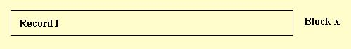
ANSI format - Record length
is equal to block length. Format cannot handle zero length records when
there is no block prefix. When asked to write a zero length record, only
the block prefix gets written.
Specification - U(block_length) where block_length
is the length of the maximum record + the length of the block prefix.
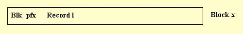
Format F & FS - Fixed - One record
per block, all records and blocks the same length.
IBM format (F) - All records are
the same length. Record length is equal to block length. When writing in
this format, input records found to be shorter than the record length are
padded with blanks while input records found to be longer than the record
length are truncated.
Specification - F(block_length) where block_length
is the length of a typical record.
IBM format (FS) - All records are the
same length. Specified block size can be larger the than the record length.
Up to the system to determine the actual block used. Use of this format
is not recommended, the utility can process on input - on output assumes
specified block length is desired value for the record length. When writing
in this format, input records found to be shorter than the record length
are padded with blanks while input records found to be longer than the
record length are truncated.
Specification - FS(block_length) where block_length
is the length of a typical record.
ANSI format (F) - All records are
the same length. Record length is equal to block length minus the length
of optional block prefix. When writing in this format, input records found
to be shorter than the record length are padded with blanks while input
records found to be longer than record length are truncated.
Specification - F(block_length) where block_length
is the length of a typical record + the length of the block
prefix.
Format FB & FBS - Fixed blocked
- More than one record per block, all records the same length.
IBM format (FB) - All records are
the same length. Each block can contain multiple records. Not required
but usually all blocks are the same length except last block which may
be shorter. Block length must be a multiple of the record length. When
writing in this format, input records found to be shorter than the specified
record length are padded with blanks while input records found to be longer
than the specified record length are truncated.
Specification - FB(block_length,record_length) where block_length
is the length of a typical record times the number of records per
block and record_length is the length of a typical record.
IBM format (FBS) - Same as above but
the specified block length but doesn't have to be a multiple of the record
length. System determines actual block length.
Specification - FBS(block_length,record_length) where block_length
is the approximate length for a block, must be greater than or
equal the length of a typical record and the utility determines the number
of records a block can handle; record_length is the
length of a typical record.
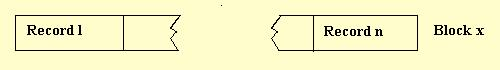
ANSI format (FB) - All records
are the same length. Each block can contain multiple blocks. Not required
but usually all blocks are the same length except last block which may
be shorter. Block length minus the length of optional block prefix must
a be multiple of the record length. When
writing in this format, input records found to be shorter than the specified
record length are padded with blanks while input records found to be longer
than the specified record length are truncated.
Specification - FB(block_length,record_length) where block_length
is length of the block prefix added to the product of the length
of a typical record and the number of records per block; record_length
is the length of a typical record.
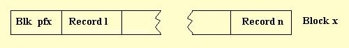
Format V and D - Variable - One record
per block, blocks and records may vary in length.
IBM format (V) - Each block contains
one record. The front of each record contains a 4 byte record descriptor
word (RDW). The front of each block contains a 4 byte block descriptor
word (BDW). When writing tape in this format, input records found to be
longer than the maximum record length are truncated.
Specification - V(block_length,record_length) where block_length
is at least record_length + 4 for the BDW and
record_length is the maximum length of a record + 4
for the RDW.
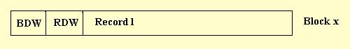
ANSI format D - Each block contains
one record. The front of each record contains a 4 byte record descriptor
word (RDW). The front of each block can optionally contain a block
prefix. When writting
in this format, input records found to be longer than the maximum record
length are truncated.
Specification - D(block_length,record_length) where block_length
is at least record_length + length of the block prefix
(if used) and record_length is the maximum length of
a record + 4 for the RDW. 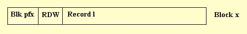
Format VB and DB - Variable Blocked
- multiple records per block, blocks and records may vary in length.
IBM format (VB) - Each block contains
one or more records. The front of each record contains a 4 byte record
descriptor word (RDW). The front of each block contains a 4 byte block
descriptor word (BDW). When
writing in this format, input records found to be longer than the maximum
record length are truncated.
Specification - VB(block_length,record_length) where block_length
is at least record_length + 4 for the BDW and
record_length is the maximum length of a record + 4
for the RDW.
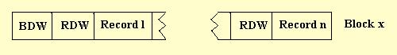
ANSI format DB - Each block contains
one or more records. The front of each record contains a 4 byte record
descriptor word (RDW). The front of each block can optionally contain
a block prefix. When
writing in this format, input records found to be longer than the maximum
record length are truncated.
Specification - DB(block_length,record_length) where block_length
is at least record_length + length of the block prefix
(if used) and record_length is the maximum length of
a record + 4 for the RDW.
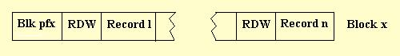
Format VS and DS - Variable Spanned
- Blocks and records can vary in length. Any single record can span one
or more blocks. A block will contain only one record segment or record.
IBM format VS - Records may take
up one or more blocks. Each block will hold one record or record segment.
The front of each record or record segment contains a 4 byte segment descriptor
word (SDW). The front of each block contains a 4 byte block descriptor
word (BDW). When writing in this format and the specified record length
is not 99999, input records found to be longer than the maximum record
length are truncated. If the specified record length is 99999, a record
of any length may be written including records longer than 99999.
Specification - VS(block_length,record_length) where block_length
is the desired block length and record_length
is the maximum length of a record + 4 for the SDW.
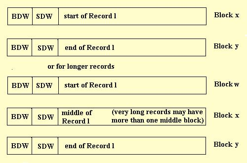
ANSI format DS - Records may take
up one or more blocks. Each block will hold one record or record segment.
The front of each record or record segment contains a 5 byte segment descriptor
word (SDW). The front of each block can optionally contain a block prefix.
When writing in this format and the specified record length is not 9999,
input records found to be longer than the maximum record length are truncated.
If the specified record length is 9999, a record of any length may be written
including records longer than 9999.
Specification - DS(block_length,record_length) where block_length
is the desired block length, including the length of the block
prefix (if used), and record_length is the maximum
length of a record + 5 for the SDW.
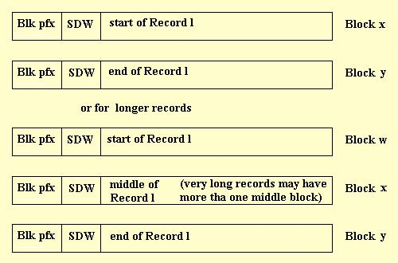
Format VBS and DBS - Variable Blocked
Spanned - Blocks and records can vary in length. Any single record can
span one or more blocks. A block will contain one or more records or record
segments.
IBM format VBS - A record may be
contained in one or more blocks. Each block will hold one or more records
or record segments. The front of each record or record segment contains
a 4 byte segment descriptor word (SDW). The front of each block contains
a 4 byte block descriptor word (BDW). When writing in this format and the
specified record length is not 99999, input records found to be longer
than the maximum record length are truncated. If the specified record length
is 99999, a record of any length may be written including records even
longer than 99999.
Specification - VBS(block_length,record_length) where block_length
is the desired block length and record_length is
the maximum length of a record + 4 for the SDW.
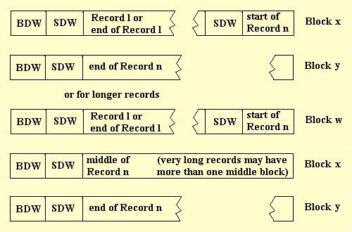
ANSI format DBS - A record may be
contained in one or more blocks. Each block will hold one or more records
or record segments. The front of each record or record segment contains
a 5 byte segment descriptor word (SDW). The front of each block can optionally
contain a block prefix. When writing in this format and the specified record
length is not 9999, input records found to be longer than the maximum record
length are truncated. If the specified record length is 9999, a record
of and length may be written including records longer than 9999.
Specification - DBS(block_length,record_length) where block_length
is the desired block length, including the block prefix (if used),
and record_length is the maximum length of a record
+ 5 for the SDW.
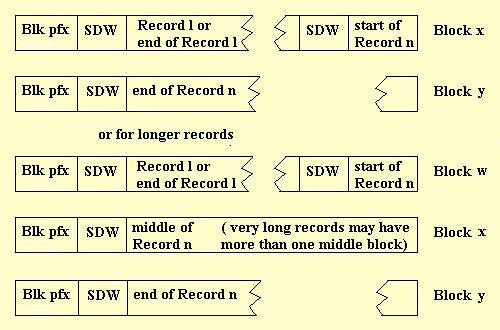